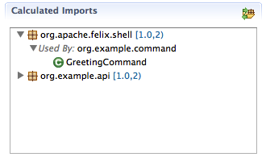
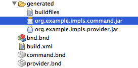

An epic split between OSGi tooling
Eclipse PDE and bndtools
experiences from a ongoing migration - started 2012
created by Peter Kirschner for EclipseCon Europe 2014
copyright for Epic Split Theme is with Volvo Trucks
printable version
Comparison of major differences between PDE vs bndtools
| Topic | PDE | bndtools |
|---|---|---|
| project layout | single bundle from one eclipse project | single or multiple bundles from one project |
| target scope | complete workspace*.target |
per eclipse projectbnd.bnd |
| MANIFEST handling | manual attribute editor | many attributes automatically derived |
| project files | .project.classpath |
. |
Pretty Code
Fragmented Views
Hit the next arrow...
... to step through ...
any type- of view
- fragments
Fragment Styles
There's a few styles of fragments, like:
grow
shrink
roll-in
fade-out
highlight-red
highlight-green
highlight-blue
current-visible
highlight-current-blue
Volvo Trucks - Making of ...
BACKUP
wanted BND/bndtools feature
| automated import package analysis including versioning |  |
| powerful OSGi bundle repository management |  |
| instant Jar bundle creation |  |
| annotation based Declarative Service implementation |  |
Developer Setup & environment
supported OS
- win32, win32, x86
- win32, win32, x86_64
- linux, gtk, x86
- linux, gtk, x86_64
target
eclipse 3.8.2
tools
- Apache ANT
- PDE build from Eclipse SDK
- [IBM RTC/jazz](https://jazz.net/products/rational-team-concert/
- Git